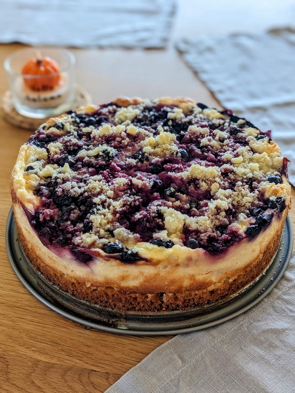

Pokud je i váš mrazák po létě nacpaný k prasknutí ovocem, možná přijde vhod recept z Albert magazínu na lahodný nedělní tvarohový koláč. Já do něj použila borůvky a maliny, ale určitě snese i jakékoliv jiné oblíbené ovoce :-)
- 100g třtinového cukru
- 255g polohrubé mouky
- 105g másla
- 1/2 kypřícího prášku do pečiva
- 4 vejce
- 200ml mléka
- 1/2 citronu
- 2 vanilkové cukry
- 500g plnotučného tvarohu
- 250g malin
- 125g borůvek
Cukr, 250g mouky a 100g másla zpracujeme na drobenku. Jednu třetinu dáme stranou a ten zbytek promícháme s kypřícím práškem. Pak přidáme 2 vejce, polovinu mléka, citronovou kůru a 1 vanilkový cukr. Rozmícháme dohladka. Těsto vlijeme do formy vymazané máslem a vysypané polohrubou moukou. Tvaroh smícháme se zbylými vejci, vanilkovým cukrem a mlékem. Vlijeme na těsto, posypeme ovocem a zbytkem drobenky. Pečeme 45 minut v troubě vyhřáté na 180°C.
